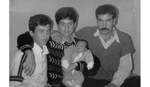
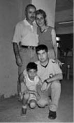
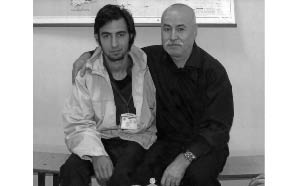
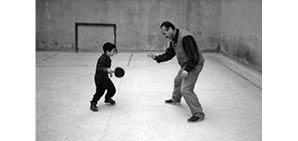

“Mektuplarla Büyümek Buruk Bir Duygu.”
İmran Kaya Canan7 1
Babam Tahir Canan, Gaziantep’te terzilik yapıyor. Küçük bir dükkânı, atölyesi, çırağı var. O dönem THKO’ya gönül vermiş, Karşıyaka Halk Derneği üyesi devrimci bir insan. O dönemde ODTÜ’nün Gaziantep kampüsünde okumakta olan öğrencilerin de dükkânına sık sık gelerek sohbet ettiği esnaflardan biri ayrıca. Elbette bu durum kolluk kuvvetlerinin de, oradaki sağcı yapılanmaların da bir yerde dikkatini çekiyor. 12 Eylül öncesi, darbe hazırlığının yapıldığı dönemde de sağcı olduğu ileri sürülen iki kişiyi siyasi maksatlı öldürme suçuyla içeri alınıyor. Sıkıyönetim Mahkemeleri tarafından suç ve delil dengesine bakılmaksızın ve herhangi bir kanıt aranmaksızın 36 yıl ağır hapis cezasına çarptırılıyor. Herhangi bir ana davanın içerisinde değil. Bu olay, sadece sağ sol meselesi olarak görülüyor. Ayrıca bu yönde farklı kanıtlar da mevcut. Örneğin, daha Tahir Canan adı bu meseleden dolayı görgü tanıkları tarafından ifadelerde zikredilmeden önce olayın olduğu günlerdeki Milliyet gazetesinde babamı sağ görüşlü olup da iki sol görüşlü öğrenciyi öldürdüğünü polisin doğrudan verdiği yalan yanlış bilgi doğrultusunda yazıyorlar. Ancak daha olayın sıcak olduğu zamanlarda babamın ismi hiçbir şekilde ifadelerde geçmiyor. Yalnız 1.50 boylarında bir adam tanımı var ortada ki, olaydan yaralı kurtulan kişi aynı mahallenin insanı. Yani ilk anda doğrudan “Bunu yapan Tahir Canan” diyebilecek birisi. Bunun yerine Tahir Canan adı, gazete haberinden 10 gün sonra ifadelerin yeniden verilmesiyle, yani bir anlamda “değiştirilmesiyle” birlikte zikrediliyor ve babam, bu şekilde zanlı durumuna düşüyor. Ayrıca, daha sonra bir örgüt adına bu suçu üstlenen iki kişi daha ortaya çıkıyor ve onlar da yargılanıp tutuklanarak cezaevine konuluyor; ancak babam yine de salıverilmiyor. Tabii bunlar da bunun bir düzen olduğu, bir oyun olduğu, bir yaftalama olduğu yönündeki şüphelerimizi güçlendiren olaylar silsilesi olarak önümüzde duruyor. 1991 yılında şartlı tahliye yasası ile çıkıyor. Sicilinden dolayı iş bulamadığı için İstanbul’dan aldığı tekstil ürünlerini Malatya, Adıyaman arası bölgelerde pazarlamaya başlıyor. Bu dönemde sürekli İstanbul’a gidip gelme durumu oluyor. 1993 yılında, yine bir gün iş bitiminde Gebze’ye dönmeden önce anneannesini görmek üzere Adıyaman’a gitmek için yola çıkıyor. O sırada Malatya-Adıyaman karayolunda çevirmeye takılıp otobüsten indirilerek, polisler tarafından gözaltına alınıyor.
Ben anne karnındayken yine geçmişteki sicilinin de etkisiyle “Türkiye Devrimci Komünist Partisi örgütüne üye olmak” suçundan 12,5 yıl ceza daha alıyor. Tabii bu ceza yalnızca 12,5 yıl yatmak anlamına gelmiyor, aynı zamanda şartlı tahliyesinden kalan sürenin infazının yanması da demek oluyor. İkisinin toplamı yine bir 36 yıl ediyor. İlk iddiada olduğu gibi yine hiçbir kanıt, delil veya inceleme yok. Sadece polis fezlekeleri ve polis muhbirlerinin ifadesiyle bu suçlamalar üzerine atılıyor ve bu doğrultuda mahkemeler bunu delilden sayıp karar veriyorlar.
Dikkat çekmek istediğim bir nokta da burada başlıyor. Babam, dönemin Askeri Sıkıyönetim Mahkemeleri, Devlet Güvenlik Mahkemeleri (DGM) ve OHAL uygulamalarının hukuk sayıldığı dönemde bu cezaları almıştır. Şu anda bu mahkemelerin yöntemlerinin de, kararlarının da tamamen keyfi olduğu uluslararası hukuk normları tarafından ortaya net bir şekilde konulmuş, o kararların adalet ve hukuk kavramlarıyla alakası olmadığı açıklanmış olduğu halde, bu kararlar hâlâ geçerli sayılıyor, doğruymuşçasına işlem yapılıyor. Kaldı ki, babam, darbe dönemi koşullarının ürünü olan her türlü fiziksel ve psikolojik işkenceye maruz kalmış bir insan. 32 yıldır cezaevinde olmasına rağmen, hâlâ üzerine atılan hiçbir suçlamayı işkence altında dahi kabul etmemiş, ideolojisinden taviz vermemiş ve ezilenlerden yana olmaktan asla vazgeçmemiş bir insandır. Siyasal erkin sindirme politikasına karşı hep ayakta kalmış ve mücadelesini sürdürmüştür. Kısacası Tahir Canan, bir sosyalist, bir devrimci olduğu için bu hukuksuzluk silsilesine maruz kalmış ama hâlâ mücadeleye devam eden politik bir insandır. Çevresindeki insanlar da, bizim tanımadığımız zamanlarda onu tanıyanlar olarak bize babamı anlattılar. Bizler babamın neler yaptığını, nasıl çalıştığını, nasıl konuştuğunu, çevresindeki insanlarla sosyal yaşam içerisinde nasıl bir rol oynadığını arkadaşlarından öğrendik. Evet kişilik olarak devrimci bir kişilikti, düşünce olarak sosyalist bir insan. Ama bu, 32 yılını içeride geçirmesine sebep olacak kadar ağır bir suç mudur? Bizce değildir.
Hem bu hukuksuzluk sürecinden dolayı hem de cezaevi koşullarının ve kolluk kuvvetlerinin cezaevindeki tutuklulara ve özellikle babama karşı olan tavır, davranış ve insanlık dışı muamelesinden dolayı birkaç farklı dosya ile beraber Avrupa İnsan Hakları Mahkemesi’ne (AİHM) gittik. AİHM’de çok fazla dosya olduğu için bu dosyalar henüz sonuçlanıp da bize geri dönüşü yapılmadı ama bu konu AİHM’ye kadar taşındı. İç hukuk yolları tüketildi. Ayrıca şöyle de bir durum var ki: 2003’teki 4959 sayılı Topluma Geri Kazandırma Yasası kapsamında babama atfedilen örgüt üyesi olma suçu tüm sonuçlarıyla birlikte ortadan kaldırıldı. Yani, Malatya 1 No’lu DGM’nin babama verdiği ceza, tüm sonuçlarıyla birlikte ortadan kalktı. Suçun sonucunun kalkması demek, babamın suçunun sonucu olarak, infazın yanması demek olduğuna göre infazın da kalkması demektir mantıken. Gebze Cezaevi tarafından yapılan, “mahkeme kararının altında tahliye edilmesine ibaresi olmadığı gerekçesiyle babamın salıverilemeyeceği” yönündeki açıklama üzerine konuyu mahkemeye taşıdık. Mahkeme de cezaevinden çıktığı son yer Gaziantep olduğu için dosyayı Gaziantep Ağır Ceza Mahkemelerine taşıdı. Ancak biz, bu durumu hiçbir şekilde Gaziantep Ağır Ceza Mahkemelerine kabul ettiremedik. Yargıtay’a da kabul ettiremedik. Tüm hukuk yollarını tükettikten sonra en son babamın ne zaman çıkacağını öğrenmek istedik. Daha doğrusu babam öğrenmek istedi. Madem şu anda çıkarmıyorsunuz, o zaman ne zaman çıkacağım diye sordu. Elimize bir müddetname geldi. Müddetnamede 2013 yazıyordu. Tabii babam yıllardır cezaevinde yatan bir insan olduğu için bu müddetname hesaplamalarının, gün hesaplamalarının hangi sınırlardan yapıldığını biliyordu. İtiraz etti buna. Benim için bunu en üst sınırdan hesaplamışsınız, hiçbir tolerans göstermemişsiniz dedi. Bize gelen ikinci cevap: 2016. Doğal olarak buna da itiraz ediliyor. Biz 2013’e itiraz ettik, 2016 ne demek oluyor diye. Daha sonra gelen cevap 2025 yönünde oldu. Yani her itiraz ettiğimizde bu sayı arttı. Üzerine 3-5 yıl daha eklendi. Biz bu durumda itiraz etmekten vazgeçtik. Daha sonra Yargıtay’a başvurularımızın sonucunda 2025 ortadan kaktı, 2016’ya geri dönüldü ama biz 2016’yı halen iptal ettirebilmiş değiliz. Şu anda ülkemizde 12 Eylül ile hesaplaşılıyor, darbeciler yargılanıyor ama 12 Eylül’le hesaplaşıldığı dönemde Tahir Canan ve Tahir Canan gibi 12 Eylül mağduru insanların mağduriyetlerinin giderilmesi bir yana üzerine yeni mağduriyetler eklenmesi hem ülke açısından hem de biz aileleri açısından içler acısı bir durum.

Soldan sağa: Gökhan, İlhan, Cahit Canan ve bebek İmran
Biz 4 erkek kardeşiz. Üç ağabeyim babamın bir önceki evliliğinden.
Ben, ikinci evliliğindenim. Önceki evliliği siyasi nedenlerle bitiyor. Cezaevine girdikten sonra babam ve ağabeylerimin annesi boşanıyor. 1991’de, çıktığı dönemde babam ve annem evleniyorlar. Ağabeylerim, anneleri ile babam boşandıktan sonra babaannemin yanında büyüyorlar. Bu durum, 1991 yılında babam cezaevinden çıkıp 1992’de annemle tanışıp evlenene kadar bu şekilde devam ediyor. Daha sonra da Kocaeli’nin Gebze ilçesine taşınıyorlar.
Hem Babamla Hem Babamsız Büyüyorum...
Babam sürekli cezaevi gezdi açıkçası. Gaziantep, Çankırı, Çanakkale, Gebze’ye gitti. Şu anda Bandırma M Tipi Cezaevi’nde yatıyor. Bu sürecin bana yansıması şöyle oldu; ben doğdum ve babasız büyüdüm. Babamı görme sıklığım en iyi ihtimalle haftada bir oluyordu, o da küçükken. Çünkü o zamanlar babam Gebze Cezaevi’ndeydi. Biz de Gebze’de yaşıyorduk. Görme imkânım daha fazlaydı. Ama şimdi en iyi ihtimalle ayda bir görebiliyorum. Çünkü açık görüş ayda bir yapılıyor. Kapalı görüş için şehir dışına yol gitmek hem bizim açımızdan daha zor oluyor hem de sürekli gidip gelmeyi maddi ve manevi olarak karşılamak sıkıntı oluyor. Çünkü babam, yıllardır cezaevinde olduğu için bir birikimi yok.

İmran, annesi, babası ve
ağabeyiyle birlikte cezaevi
ziyaretinde
Ağabeylerim evliler, kendilerine ait bir hayatları var. Annem de emekli maaşının elverdiği bütün olanakları hem okul hem ev hem de cezaevi süreçlerine aktarmak durumunda. Ona rağmen ayda bir görüşme imkânım çok oldu.
Babaya dair gördüklerimle yolda, sokakta tanık olduklarımın, arkadaşlarımdan duyduklarımın tam tersi bir durumu yaşıyordum ben. Çünkü arkadaşlarım babalarından korkarlar veya babalarından çekinirler. Bir şey yaparken babalarından izin alırlar. Bir şeyleri babalarından isterler. Oysa ki, ben baba otoritesi ne demek bilmiyorum. Babadan korkmak, babadan çekinmek nedir, baba bir evde nasıl bir ağırlık teşkil eder bunu bilmiyorum. Kimilerine göre çok sıradan gelen birçok şeyi ben yapabilmiş değilim. Örneğin, çıkıp da bir baba oğul gezmek bizim için çok lüks bir şey oldu her zaman. En basit şeyler bizim için hep ütopya halinde kaldı. Bunlara yabancı olunca doğal olarak insanlara da biraz yabancı oluyorsunuz. Sosyal olarak, bir kere insanlar size babası yok diye bakıyor. E böyle olunca da onların karşısında biraz eziklik hissettiğiniz oluyor. Yani kendimi anlatamayacağım dönemlerimde ilkokul, ortaokul ve lisenin başlarında “Baban ne iş yapıyor?” gibi klasik aile tanışma sorularına “Terzi ya da emekli” diye geçiştirerek cevap verdiğim oluyordu. Daha sonra da yalan söylediğim için utanıp bunun sıkıntısını çekiyordum. Bu durumu insanlara açıklamakta da zorlanıyordum, nasıl olacak? Bize hayatın başından beri okullarımızda öğretilen şey iyi insanların cezaevine konulduğu değil, kötü insanların, kötü şeyler yapan insanların cezaevine konulduğudur. E, dönüp babanıza bakıyorsunuz: kötü şey yapacak bir insan portresi göremiyorsunuz. O kadar zamanını içeride geçirmiş olmasına rağmen hâlâ çocuklarını, torunlarını okumaları yönünde teşvik ediyor, onlara kitaplar veriyor, daha iyi bir dünya fikrini her fırsatta aşılamaya çalışıyor. Böyle bir çatışma içinde de bunun sıkıntısını hem ben çektim hem de ağabeylerim çekti. Şu anda kendimizi anlatabiliyoruz. En azından diyebiliyoruz ki, babamız şu şu şu sebeplerlerden dolayı cezaevinde ama bundan 2 sene öncesine kadar babamla ilgili her türlü konuşmadan kaçınırdım.
Birçok arkadaşımdan sakladım, birçoğu bilmez. Bir noktadan sonra, kendimi bu konuda ifade edebilecek hale geldikten sonra artık insanlarla rahat rahat konuşabilmeye, kaybettiğim özgüvenimi yeniden geri kazanmaya başladım. Ben 19 yaşındaysam, bunun 17 yılı bu anlamda sessiz geçti. Ağabeylerim gerek iş hayatında olsun, gerek okul hayatında olsun, ki ben henüz iş hayatına tam olarak atılmış değilim, bunun sıkıntısını çok yoğun bir şekilde çektiler. Gebze küçük bir yer, öyle büyükşehir gibi değil. Yani küçük bir kasabada büyük şehri yaşamak gibi oradaki ortam. Birçok olumsuz yansımaya açık bir durum. Ve biz de bu yansımaları sürekli minimuma indirmeye çalışır halde yaşadık. Biz bunlarla uğraşırken, bunları yaşarken içeride de bir insan var. Babam 60 yaşında, 1953 doğumlu. Yani kimliğe göre öyle en azından. Hayatının 32 yılını cezaevinde geçirmiş, çocukları doğmuş, büyümüş, kimisi askere gitmiş, sonra evlenmişler; altıncı torunu doğmuş, halen cezaevinde. En küçük oğlu üniversiteye başlamış, halen cezaevinde. Bu şekilde giderse, en küçük oğlu üniversiteyi bitirdiğinde de cezaevinde olacak. Yani bize hep yabancı kaldı babam. Bizim hayatta ne başarımızda ne üzüntümüzde yanımızda olabildi. Biz de onun varlığını hissedemedik. Yani birisi ile ilgili bir şikâyetimiz olduğunda, küçükken mahallede bir çocukla kavga ettiğimiz zaman koşup da şikâyet edebileceğimiz bir baba yoktu ortada. Bunun eksikliği zaten tüm bu saydığım olaylar ve bu kişisel yansımalardır. Bütün bunlara rağmen çok yalnız bir çocuk değildim. Normal bir çocuğun yaptığı şeyleri yapıyordum. Yapıyordum da bir tarafı hep eksik kalıyordu aslında. Çünkü bir çocuk yalnızca yolda, sokakta koşup oynamaz. Bunları ailesiyle de paylaşır. Akşam babasına sofrada anlatır, onunla bazen top oynamaya çıkar. Ne bileyim denize gider, sinemaya gider, kitap okuma saatleri filan yapar ki, biz evde yapardık bunu ama... Bunlarda babanın hep eksik oluşu veya bunların hep cezaevinde yapılıyor oluşu, elbetteki birçok şeyi eksik yaşamanıza sebep oluyor. Ben babamla olabilmek için cezaevinde de bir süre kaldım. Yanılmıyorsam, 10 yaşın altındakiler kalabiliyordu. Yani 2000 öncesi, babamın yanında, cezaevinde kısa süreli de olsa kalabiliyordum. İşte klasik çocuk oyunlarının cezaevi versiyonlarını oynuyorduk. Kaydıraktan kaymak yerine ranzadan atlamak, denize gitmek yerine leğende oynamak, havalandırmaya çıkmak, volta atmak, tespih çekmek vs vs.

İmran, babası Tahir Canan’ı cezaevi ziyaretinde
Ben tabii ki o sırada babamı görme sevincini yaşıyordum. Babamın iyi bir insan olduğu ama yine de cezaevinde yattığı ayrımını düşündüğümü sanmıyorum. Ailem benden bu durumu hiçbir zaman kötü bir olaymışçasına saklamadı. Ben bu durumu kanıksayarak büyüdüm biraz da. Bu nedenle bende bir kızgınlık ya da tepki duyma durumu olmadı. Babamla aram, cezaevi koşullarının elverdiği ölçüde gayet iyiydi. Hâlâ da iyidir. Biz baba oğul ilişkisini demir parmaklıklar arkasından olabilecek en iyi seviyede yürüttük. Tabii bunda babamın hayata tutunuşu, hayata ve bize olan bağlılığı büyük etken oldu. Şu anda babamın yanına gitsem, bir fotoğraf çektirsek ve kimin gözleri daha parıltılı diye sorsalar, kesinlikle herkes babamı gösterir. Çünkü O, yaşadığı tüm olaylara rağmen hayattan kopmamış, karalar bağlamamış bir insandır, her zaman umutla bakmıştır dünyaya. Hâlâ da öyledir. Yani içeride hiçbir zaman kendisinden vazgeçmemiştir. Düzenli sporunu yapar, el işleri yapar. Onları bize gönderir, hediyeler gönderir. Bu şekilde kendi hayatını kendisi idame ettirmeye çalışan bir insandır. Olabildiğince bize yük olmamaya çalışır. Yaptığı el işlerini bize gönderdiği zaman sağa sola, komşuya satarız. Ben gençlik kampına giderim orada stand kurar, satarım. Bu şekilde bize yük olmamaya, yokluğunu hissettirmemeye ve bizi de kin ve nefretle doldurmamaya her zaman gayret etmiştir. İnsanlar şu anda bana nasıl böyle sakin durabiliyorsun diye soruyorlar. Benim babam bu kadar süre içeride kalsa ben şunu yaparım, bunu yaparım, çok tepkisel olurum diyorlar. Örneğin, kolluk kuvvetlerini görünce nefretle dolmam gerekirdi ya da ne bileyim bir adliye gördüğüm zaman, işte cezaevi gördüğüm zaman tepkili olmam gerekirdi. Oysa ki babam hiçbir zaman bize bunları aşılamadı. Bize hiçbir zaman demagoji yapmadı. Sanki cezaevinde değilmişçesine bizimle ilgilendi her gittiğimizde. Konuşmalarımız evet, genelde hukuki sürece dair olurdu. Babamın bizim günlük aile meselelerimizle ilgilenme şansı çok az olurdu. Avukatlar, dilekçeler gibi konularla geçerdi konuşmalarımız ama bunların arasında bile bize olan sevgisini hissederdik. Bizi hep bu yönde yetiştirmeye çalıştı, bize hep bu yönde fikirler aşılamaya çalıştı. Yanımda olmamasına rağmen bana kitap okuma alışkanlığını kazandıran da babamdır. Benim bu kadar sakin olmamı sağlayan da. Belki hayata baktığımda, babamın yapamadığı birçok şeyi yapma isteğiyle ben birçok şeyle ilgilenmişimdir. Tiyatro ile ilgilenmişimdir, müzikle ilgilenmişimdir, teknoloji ile daha içlidışlı olmaya çalışmışımdır. Bunlar babamın bana kazandırdıklarıydı. Ben bunlardan hiçbir zaman vazgeçmem ve babamın da bu şekilde olmasını istediğini çok iyi biliyorum.
Mektuplaşırız. Babamın bana düzenli olarak kazandıramadığı tek alışkanlık da budur diyebilirim. Yazmak benim için her zaman gözümde büyüyen bir eylem olmuştur. Tabii babam olduğu için yine de olabildiğince sık yazmaya çalışırım ama babam, bu konuda biraz daha aktiftir.
Mektuplarla büyümek biraz buruk bir duygu. Şöyle buruk; sanki kâğıt üzerinde yaşayan, sanal bir babanız varmış gibi hissediyorsunuz. Bunu somutlaştırma yöntemi görüş günlerine gittiğimizde mektup üzerine konuştuğumuz zaman oluyor ama onun dışında bir mektup geldiğinde ve okuduğumda mutlu oluyordum. Oluyorum da. Ama çok uzaklardan gelen, işte üzerine pul yapıştırılmış bir zarfta, babanın düşüncelerini öğrenmek, bunu, senin yüzüne karşı rahatça, kısıtlı olmayan bir sürede söyleyememesi, bu biraz acı oluyor.
Sadece bize mektup yazmakla kalmaz; güncel konular da yazar, politik olarak yazar, o dönemde gündemde olan bir konu varsa o konuya dair eleştirel bakış açısıyla bir yazı yazar örneğin. Onu bize gönderir, biz okuruz, üzerine tartışırız. Tabii biz Tahir Canan’a Özgürlük Kampanyası’nı başlattıktan sonra bu yazılar sadece bizim olmaktan çıktı, basın yayın organlarına da sıçradı. Bunun bilgisayar ortamına aktarılma işi de bize düştü. Babamın yazılarını basına göndeririz. Yayımlayanlar yayımlar. Daha sonra gazetede yayımlandıysa gazete kupürünü keseriz. İnternette çıktıysa çıktısını alırız. Bunları babama göndeririz. O da en azından yazdığı yazıların geri dönüşünü ya da bizim verdiğimiz röportajların, bizim hakkında söylediklerimizin kamuoyuna yansımasını içeriden takip etmiş ve bu sayede biraz daha hayata bağlanmış olur.
Ev Ekonomisi
Annem emekli olana kadar aralıksız çalıştı. Kamu çalışanı bir hemşireydi. Mesleği gereği de çok yorucu ve uzun saatler boyunca çalışıyordu. Daha sonra istifa etti ve özel sektörde çalışmaya başladı. Çok yoğun bir çalışma hayatı oldu. O arada beni ve ağabeylerimi okutmak için de elinden geleni yaptı. Tabii ki yaşayabilmek için, bazı şeylerden feragat etmek anlamına geliyordu bu. Örneğin, sinema, tiyatro, konser gibi etkinlikler bizim için çok seyrek yapılan etkinlikler halindeydi. Bunların haricinde de zaten aile olarak çok iktisatlı hareket eden bir aileyiz. Ben şu anda öğrencilik hayatımda da onun faydasını görüyorum. Sürekli maddi sıkıntılar içerisinde olmanın, eve giren gelirin az olmasının şöyle de bir faydası oluyor; insan hayatta minimumla idare etmeyi ve aynı zamanda da manevi olarak kendini geliştirmekten geri kalmamayı öğreniyor. Ben bunu öğrendim. Maddi sıkıntılarımız evet, iyi şeyler değildi ama ben diyorum ki, iyi yanlarını da bulup ortaya çıkartabildiğimiz zaman faydalı da oluyor. Ben 10 yaşımdayken annem emekli oldu. Mesela annemin çalıştığı, benim bebeklik dönemimde, ağabeylerim lisede kredili sistemde okuyorlardı. Birinin dersi bitiyordu o geliyordu, diğeri dersine gidiyordu. O şekilde bana bakıyorlardı. Daha sonra İlhan ağabeyim, Gazi Üniversitesi’nin Kırşehir kampüsünde Pazarlama’yı kazandı. Oraya giderken beni de yanında götürdü. Ben orada onunla 1-2 sene kadar öğrenci evinde kaldım. Aynı zamanda anaokuluna gittim. İki sene orada kaldıktan sonra da geri döndüm. Gebze’de tekrar illokula başladım. O iki sene annemden ayrılmış oldum.

İmran, babasıyla cezaevinde oyun oynuyor
Bütün bu süreçte biz çekirdek aile olarak, çok mecbur kalmadıkça kendi kendimize bir şekilde hayatımızı idame ettirmeyi tercih ettik. Hâlâ da öyleyiz. Çok zorda kalmadığımız sürece birbirimizden bağımsız birilerinden yardım istemeyiz. Gerektiği durumlar da elbetteki olacaktır ama gerekmediği sürece biz destek ya da yardım hiçbir şekilde istemedik, kabul de etmedik.
Manevi destek aile olmanın getirdiği bir şey zaten. O illaki olacak ve oluyor da. Bu konuda şu destek verdi, şu destek vermedi diye bir ayrım yapamayacağım. Bir karşı duruş olmadı. En azından bize yansıtılmadı.
Okul Dönemi
Açıkçası okul konusunda biraz şanslıydım diyebilirim. Ben ilkokulda iki okul değiştirdim. İlkokulu ve ortaokulu daha iyi eğitim almam açısından ayrı okullarda okudum. Her yeni okula başlamadan önce, annem gider idarecilerle konuşur, öğretmenleri bu konuda bilgilendirir ve bu konunun bana yansımasının en az seviyede olmasını sağlardı. Liseye gelene kadar hiçbir öğretmenim benimle bu konuda konuşmamış, bu konuyu bana yansıtmamışlardır. Bu açıdan şanslıydım. E tabii lisede belli bir yaşa geldikten sonra öğretmenler ve müdür yardımcıları artık sizinle birebir konuşma ihtiyacı duyuyor. Gelip bir arkadaş gibi soranlar oldu. Öğretmenlerimin, durumu öğrenmeleri aslında, benim görüş günlerine gitmemden kaynaklanıyordu. Örneğin, bir sınava giremiyordum. Ben bunu “Babam cezaevinde, görüşüne gitmek durumundaydım, o nedenle giremedim sınava” şeklinde açıklıyordum. Daha sonra “Neden cezaevinde, kaç yıldır içeride, zor olmuyor mu aileniz için?” gibi sorularla diyalog ilerliyordu. Daha çok bu durumun bize yansımasını merak ederlerdi. Ben birebir yani öğretmenler tarafından tacize varan bir sorgulama vakası ile karşılaşmadım. Bazı öğretmenlerim öylece sorup geçiştirdi cevabını aldıktan sonra. Kendileri ne düşündüler ne yaptılar bilmiyorum. Ama bazıları da, özellikle sevdiğim hocalarımdır da kendileri, konuyu öğrenmeden önce de seviyordum, gayet arkadaş gibi yaklaştılar. Sıkıntım olduğu zamanlarda bana destek olmaya çalıştılar.
Komşularımızın bazıları babamın cezaevine girmeden önce tanışma fırsatı bulduğu kişiler. O bakımdan pek bir sıkıntı yaşamadım ilkokul ve ortaokulda. Zaten ben küçükken hemen hemen herkesin elinden geçtim diyebilirim. Tabii babamın şehir şehir gezmesi yüzünden biz de şehirlerarası yollarda oluyorduk. Neredeyse her şehirde bir evde kalmış oldum. Ama onun bende şöyle faydalı bir etkisi de oldu; ben asla yerimi yadırgamam. Hep uyum sağlamışımdır. Ne komşularımdan ne de ilkokul arkadaşlarımdan bu konu ile ilgili sıkıntı yaşadığım kimse olmadı. E tabii lisede insanlar olgunlaşıyor, daha yetişkin olunca biraz da acımasız oluyorlar. O konuda “Bir suçu var ki içeridedir, işte solcu değil mi, terörist!” falan gibi tepkilerle gelenler de oldu. Tabii ailem sürekli beni bu konuda uyardığı ve bende de öyle bir refleks olduğundan dolayı bu insanları umursamamayı, göz ardı etmeyi, yeri geldiğinde kısa bir cevapla geçiştirmeyi öğrendim. Faydası da oldu açıkçası. Şu ana kadar kimseyle bu konuda ciddi bir sıkıntı yaşamadım. Tabii kırıldığım insanlar oldu. Beni yaralayan insanlar da oldu bu konuyla alakalı olarak ama insan aşıyor zamanla, bir şekilde aşmak zorundayız. Şu anda üzerimde kalan çok ağır bir etkisi yok.
Anneme Babamı Soruyorum
Ben babamın siyasi maksatlı adam öldürme suçundan içeride olduğunu öğrendiğimde, bir an anneme, inanmadığım halde, babam gerçekten böyle bir şey yaptı mı diye sormuştum. Küçüktüm tabii o zaman, aklım ermiyordu en fazla 7-8 yaşlarındaydım sanıyorum. Annemin bana cevabı da: “Eğer yapmış olsaydı, zaten şu anda bunun için ciddi bir uğraş veriyor olmazdık...” oldu. “Bu kadar inanarak peşinden koşmaz, davalara gitmez, şehir şehir peşinden gezmezdik” dedi. O cevap bana hayatım boyunca yetti. Hâlâ da yetiyor. Ben buna inanıyorum. Eğer babam öyle bir suçu işlemiş olsa, ben suçsuzum derken bizim yüzümüze bakabilecek karakterde bir insan değil. Eğer yüzümüze bakarak ben suçsuzum, yapmadım diyorsa, yapmamış olduğuna ben yürekten inanıyorum. Dediğim gibi o cevap bana geri kalan yıllar boyunca yetti, halen de yetiyor.
Aktif Siyaset...
Evet, belli bir siyasi görüşüm var. Ona göre insanlarla da görüşüyorum, tartışıyorum. Tabii ki, siyasi görüşe sahip olmak demek, şu anki gördüğümüz gençler gibi canhıraş bir şeylerle uğraşmak ya da işte okulda aykırı davranışlarda bulunmak demek değil. Siyasi görüşe sahip olmak aynı zamanda onu düzgün bir şekilde savunmayı, okulda derslerinizde başarılı olarak örnek bir insan görünümü sergilemeyi gerektirir diye düşünüyorum. Tabii ki biz, kendim ve arkadaş çevrem olarak, şu anki mevcut sisteme karşı olan gençleriz, ama bu sisteme karşı olmak demek kaba kuvvete dayalı bir tavırla karşı olmaktan ziyade sistemin içerisinde insanların saygı duyacağı bir noktada yer edinip ondan sonra sistemi değiştirmeye yönelik hareket etmektir diye düşünüyorum. Ben de bu yönde hareket ediyorum. Örneğin, 4 sayfalık, broşür gibi bir dergi çıkarıyorum arkadaşlarımla beraber, içinde arkadaşlarımın yazısı oluyor. Mesela şu anda gündem nedir, 8 Mart. 8 Mart’a dair kadınlara yönelik bir dergi çıkardık. İranlı şair, yazar Füruğ Ferruhzad’ı konu aldık. Onun şiirlerinden örneklerle, hayatını edebi bir dille anlatmaya çalıştık. Bizim çalışmalarımız her zaman bu yönde olur. En azından ben, bu yönde olması gerektiğini düşünüyorum. Tabii ki derslerimize de, okuduğumuz bölüme de ağırlık vermek hem bizim geleceğimiz açısından hem de insanların bize toplum içerisinde saygı duyması açısından önemli bir nokta. Derslerine girmeyen, okuluyla barışık olmayan bir insanın okulu ile ilgili problemleri umursadığını kimse iddia edemez. Kimse de onu dinlemez zaten. O yüzden ben önce okulumu, önce derslerimi, önce kendimi insanlara insan olarak kabul ettirip ondan sonra siyasi görüşümü tartışma yoluna gitmeyi ya da insanları o görüşe çekmeye, o görüşü başka insanlarla da paylaşmaya çalışıyorum. Siyasi olarak babamı takip ettiğim söylenebilir. Devrimciler 1960’larda veya 1970’lerde yaptıklarıyla kesinlikle kalmadılar. Onların yaptığı her hareket, onların ortaya koyduğu her düşünce, her eylem, ölüme giderkenki dik duruşları en azından gençliğin bir kısmına büyük bir örnek teşkil etti. O, nesilden nesile aktarılan bir şey.
Üniversite ortamı farklı. Şimdi bir kere; üniforma denen bir şeyden kurtulmak, müdür, müdür yardımcısı, öğretmenler, güvenlik görevlileri gibi bizim üzerimizde bir nevi kolluk kuvveti görevi gören etkenlerden kurtulmak bana kendimi çok daha rahat ifade etme hakkı tanıdı. Kendimi ifade edebildiğim sürece her zaman için özgüvenim daha yerinde -hem psikolojik olarak hem fiziksel olarak- daha sağlıklı bir zaman dilimi geçirme imkânım oluyor. Hikâyemi paylaşabilecek muhatabımı bulduğum için de mutluyum. Yani saklamak durumunda değilim. Lisedeyken de çok saklamadım aslında, en azından son iki senesinde ama muhatabımı bulamıyordum. Gerçekten bana neci bir gençlik, bilgisayar oyunlarına ve facebook, twitter gibi sosyal medya sitelerine takılı kalmış, sokakta seksek oynamanın ya da top oynamanın ne demek olduğunu artık yavaş yavaş unutmaya başlamış 1990’lar gençliği vardı lisede. Elbetteki üsttenci bir tavır takındığım zannedilmesin ben de çok farklı biri olmadım, olamazdım da. Yani 1990’larda doğmak biraz da arada kalmak demekti. Ama üniversite o tür ilişkilerin, davranışların yavaşça elendiği, biraz daha hayata bağlı, hayata tutunan, hayatı ve hayatın getirdiklerini de doğal olarak umursayan düşüncelerin dinamik olarak yer aldığı bir platform olduğu için tabii ki orada kafa dengini, muhatabını bulmak daha kolay oluyor. Yapılan sohbetler çok daha düzeyli oluyor, insanı manevi yönden çok daha geliştiriyor. Hakikaten ciddi bir stresi, üzerinizden büyük bir yükü atmış oluyorsunuz.
Bütün bu süreçlerde profesyonel anlamda psikolojik bir destek almadım. Ailemden herhangi birisi aldıysa bile muhtemelen bunu bana belli etmemiştir.
Her Cuma Polis Kimlik Sorardı...
2000 öncesinden bahsetmek gerekirse, o benim tamamıyla çocuk olduğum bir dönem. O yüzden hayat benim için küçük bir çocuğun hayatı nasılsa öyle geçiyordu. Duygusal eksikliklerim ve burukluklarım dışında standart bir sanayi şehrinde bir çocuk nasıl yaşarsa, arkadaş grubu nasıl olursa ben de öyleydim. Tabii, 2000’lerden sonra özellikle ortaokul dönemimde durum değişmeye başladı. Öncelikle sanayi şehri olması Gebze’nin, kozmopolit bir yapıya sahip olmasını da yanında getiriyordu tabii ki. Bu kozmopolit yapıda o bahsettiğim muhatabınızı bulma meselesi her zaman o kadar da kolay olmuyor. Çünkü çok çeşitli insan var. Çok farklı kültürlerden insanlar var. Evet, kültürel bir zenginlik var ama diğer ailelerin ekmek kavgası ve çocuk okutma dertleriyle bizim ülkenin gidişatını da içine alan gündemimiz pek tabii ki kesişmiyordu. Benim ailem hem ülke gündemini takip edip bunun içerisinde yer almak hem de çocuklarının geleceğini düşünmek gibi bir zorunluluğa sahip olduğundan, ben de öyle bir insan oldum doğal olarak. Ben de o şekilde yetiştim.
Topluma yabancılaştığım oldu. Hem uğraşılarımdan dolayı hem de ailemin politik geçmişinden ve yapısından dolayı yabancılaştığım zamanlar oldu ve hâlâ da oluyor. Ben ne zaman Gebze’ye gitsem, insanlar tarafından –yalnızca fikri anlamda değil– fiziksel olarak da, yani işte uzun saçlı sakallı bir çocuk gelmiş, sonuçta oranın yerlisi ama hiç de yerlisi gibi değil diye değerlendirildiğim oluyor. Çünkü Gebze’nin genel nüfusuna uymayan bir profil çiziyorum. Biraz da tutucu bir yer. Benim profilim insanlara biraz yabancı geliyor. Arkamdan birileri satanist diye bağırdığı zaman, bunu anlamak çok da zor olmuyor. E tabii çevremdeki insanlarla da öyle oluyordu. Her ne kadar çok farklı yapıda arkadaşlarım olsa da kendi kafa yapıma uygun, kendi dinlediğim müziğe uygun, işte politik konuşmalarıma uygun insanları bulmak tabii ki belli bir zorluk yaratıyordu. Ondan kurtulmak zaman aldı. Şehir değiştirmeyle de biraz alakası vardı ama bunun doğrudan babamla ilgili olmasından ziyade ailemin politik olmasından ve benim uğraşlarımın da biraz farklı olmasından kaynaklı olduğunu düşünüyorum. Babam bu durumda olmasaydı da ben aynı yabancılaşmayı belki biraz daha küçük bir ölçekte ama yine de yaşayacaktım. O evrimleşme süreci daha yavaş olacağından şimdikinden daha küçük bir etkisi olacaktı üzerimde.
Evimizde aranma ya da baskın gibi bir durum söz konusu olmadı. Ama şu oluyordu; lisedeyken her cuma benim dersim yalnızca öğlene kadardı. Öğlene kadar olduğu için eve servisle değil kendi imkânlarımla dönüyordum. Çarşıya geldiğimde, her cuma aynı yerde farklı polisler tarafından düzenli olarak bana kimlik sorulurdu. Bu hiç sekmezdi. Gebze’de her cuma pazar kurulur. Pazarın girişinde polis tarafından önüm kesilir ve kimlik kontrolü, GBT8 sorgulaması yapılırdı. Bunun nedenini sorduğumda; standart prosedür, denk gelmiş gibi cevaplar alırdım. Kimliğin nerede, gösteriyorum kimliğimi, TC kimlik numaramdan GBT sorgulamamı yapıyor. Nerede oturuyorsun, hangi okulda okuyorsun gibi göstermelik bir, iki soru. Daha sonra da kimliğimi veriyorlardı ve ben evime gidiyordum. Bu, düzenli olarak böyle devam ediyordu. Ama her cuma olması, beni, Lise 1’de olmamdan dolayı, hem korkutuyordu hem de tedirgin ediyordu. Benim de tek yolum orası. Eve daha kısa yoldan gidebilmek için mecburen oradan geçmek zorundayım. Çünkü çarşıya geldikten sonra ikinci bir minibüse binip para harcamak yerine eve yürümeyi tercih ediyordum. İşte pazarda kapkaççılık olmuş, şöyle olmuş böyle olmuş derlerdi ama üzerimde okul üniforması, sırtımda sırt çantam ve saçım, sakalım düzgün kesilmiş, ceketimi giymişim. Sokakta görebileceğiniz klasik bir lise öğrencisidir o görünüş. Ama nedense kapkaç, hırsızlık bahaneleri ile bana sürekli bu yönde GBT sorgulaması yapmaları denk geliyordu. Bunun haricinde çok ciddi bir olay olmadı.
Umutlarım, Kızgınlıklarım, Keşkelerim…
Eğer birinci sınıfı geçebilirsem umudum olacak. (gülüyor) İşin şakası bir yana şimdiye kadar umut dolu olmaktan hiç vazgeçmedim. Şu saatten sonra vazgeçmek bana, kendime ihanet etmek gibi geliyor. Bir bu sebepten, ikincisi de hakikaten öyle hissettiğimden. İllaki biz de bir gün düze çıkacağız diye düşünüyorum. Yani sonsuza kadar insanların gözünde trajik bir aile olarak kalacak değiliz, diye düşünüyorum. Biz hiçbir zaman bu trajik durumu bu yönüyle yansıtmamaya çalıştık. Yani bazısı vardır; bu tür olaylardan çok etkilenir ve etkilendiğini belli eder. Bu kadar uzun tutukluluk sürelerine sahip yakınları olan başka ailelerle de görüştüğümüzde o etkilenmenin çok fazla dışavurumu olduğunu gördüm. Biz hiçbir zaman öyle olamadık nedense. Bizde her durumda daha güçlü olmak, hayata daha da tutunmak sanki bir kural gibiydi. Yani kötü bir sonuçla karşılaştığımızda biz bunun üzüntüsünü evimizde yaşar, dışarıda normal hayatımıza devam ederdik.
Aslında bu durum, insanların bizim güçlü duruşumuza saygı duyması açısından da iyi bir şeydi. Çünkü kendisini tamamıyla dışarıya açık eden, acılarını kendi içerisinde, kendi ailesi içerisinde paylaşmaktansa, dışarıya vuran, feryat figan eden insanların toplum gözünde acınası bir duruma düşmesi beni her zaman üzmüştür. Yani diğer insanlar onlara her baktıklarında acı bir tablo görüyorlar. Oysa ki bize baktıklarında, diğer arkadaşlarında ne görüyorlarsa bizde de onu görüyorlar. Yani “Biz aslında anormal değiliz. Anormal olan bu devlet. Biz normal hayatımıza devam ediyoruz. Anormal olan bu sistem” demenin en güzel göstergesidir bu diye düşünüyorum.
E tabii ki biz de yeri geldiği zaman kızıyoruz. Çünkü bu, hukuksal sürece dair de oluyor. Bir mahkeme kararı geliyor, büyük bir hayal kırıklığı. Yani tamam, dışarıya karşı güçlü görünmeye çalışıyor olabiliriz ama bu, insan olduğumuz gerçeğini değiştirmiyor tabii ki. Biz de insanca tepkiler veriyoruz. Yani kızıyoruz, yeri geldiğinde evde kendi kendime bir şeylere sinirlendiğim oluyor sırf bunlardan dolayı. Asabi oluyorum, gergin oluyorum. İşte, çevremdeki insanları bazen kırdığım da oluyor. Gelen her kötü haberi bir şekilde mantık filtresinden geçirip de bunu bir kenara depolayacak bilgisayar mekanikliğinde işleyemiyoruz ne yazık ki. Biz de sinirleniyoruz. Yeri geliyor gözlerimiz doluyor. Yeri geliyor bir şeyleri kırıp dökme ihtiyacı hissediyoruz ve yeri geldiğinde yapıyoruz da. Bu kızgınlıklar oluyor. Ama bu da gerekli olduğu için oluyor zaten. Bunun dozunu ayarlamak, bu kızgınlığı dışarıya göstermek ya da göstermemek, evin içerisinde ya da kendi ortamımda, kendimi rahat hissettiğim bir yerde bağırıp çağırıp öfkemi boşaltıp daha sonra dışarı çıkıp normal hayatına devam etme ihtiyacı bu şekilde işliyor. Evet, evde bağırıyorum çağırıyorum, kızıyorum, öfkeleniyorum, belki hiç konuşmuyorum, bunalımda olan bir insan gibi oturuyorum saatlerce, başka şeylerle ilgileniyorum. Sonra dışarıya çıktığımda biraz daha rahatlamış oluyorum ve normal bir şekilde hayata devam ediyorum. Bir tür baş etme mekanizması. Psikolojik olarak hem bana hem de çevremdeki insanlara en faydalı olacak yöntemin de bu olduğunu düşünüyorum.
Babamın siyasal tercihlerinin sonuçlarını yaşıyorum gerçeği eğer normal şartlarda yani normal bir ülkede bu şekilde olsaydı; evet, bu gerçeği kabullenmem çok daha zor olur, buna karşı isyan eder, daha isyankâr, daha anarşist bir tavra bürünebilirdim. Ama ülkenin her yerinden toplu mezarlar çıkarken benim böyle bir lüksüm yok. Gerçekten yok. Yani ben, 12 Eylül mahkemelerine katıldığım zaman orada afiş açarken sağ bir insanın, babamın hakkını aradığım için utandığım oluyor. Neden? 105 yaşında oraya gelen Berfo Ana vardı. Ölülerinin kemiklerini isteyen insanların yanında sağ bir insanın cezaevinden çıkmasını talep etmek bana çok hafif geldi. O insanlardan yeri geldi utandığım oldu. O yüzden ne benim ne de bu durumda olan başka hiç kimsenin bu şekilde yapma lüksü yok. Çünkü o zaman sorarlar insana: yani tamam sen bunları yaşadın da, o insanlar ne yapsın? Sen bu tepkiyi verdikten sonra o insanlardan nasıl bir tepki bekliyorsun diye sorarlar. Sormasalar bile, vicdanının bunu sana soracağından emin olabilirsin. Yani hayata karşı birilerine kızgınlık duymak, neden bu benim başıma geldi, neden öyle oldu demek... Hayır bu değil. Bunu yapmak büyük bir vicdansızlık ister. Biz de o vicdansızlığa sahip insanlar olamayız, olmamalıyız.
Aslında şimdiye kadar keşke dediğim şeyler hiç olmadı desem yalan olmaz. Yani iyi ki babam siyasi bir kişilikmiş, iyi ki bize bunları öğretmiş, iyi ki babammış. Ben hep bu şekilde düşündüm. Hiç babama dair keşkelerim olmadı. Bir tek şu oldu: keşke daha fazla görüşebilseydim. Yine siyasi bir kişilik olsun, yine bize öğrettiği değerler bizde kalsın ama keşke bu kadar kısıtlı ve bu kadar zor yollarla görüşmeseydik. Benim tek keşkem bu olur.
Hukuka güvenmek isterdim ama açıkçası güvenmiyorum. Çünkü hukuk yazılı olan metinlerden çıkıp keyfi uygulamalara dönüştüğünden dolayı, eğer hukuka gerçekten güvenen varsa; yani şu andaki hukukun kesinlikle mükemmel işleyeceğine, herkesin cezasını bulacağına ve adaletin halihazırda işleyen şekliyle yerine getirileceğine inanan var ise aynı ülkede yaşadığımız konusunda şüpheye düşerim. Çünkü şimdiye kadar yaşanan olaylar bize birçok kez öğretti ki bu ülkede “hak hukuk”; “gak guguk” olarak algılanıyor. O yüzden gerçekten hukukun ve adaletin doğru bir şekilde işlemesi hepimizin istediği şey. Benim kendi adıma çok çok istediğim bir şey ama bu, güvendiğim anlamına gelmiyor. Kesinlikle güvenmiyorum. Yani babam normal hukuk kuralları işletilerek -ki, o durumda zaten çıkabiliyordu- cezaevinden çıkmış olsaydı, belki o zaman derdim ki, evet biraz güvenilebilir, bazen yerinde işleyebiliyor. Ama bakıyorum da ülkede ne kadar adli ve siyasi vaka varsa bunlar olması gerekenden farklı, bambaşka şekillerde işleyen yargı süreçlerine tabii oluyor. Ne vicdanın, ne mantığın, ne de uluslararası hukuk normlarının kabul edeceği şeyler oluyor. O yüzden de güvenmiyorum.
İnsanlara da hemen güvenmem ama bunu bir güven problemi olarak görmüyorum. Bunu bir temkin olarak görüyorum. Güvenmem biraz zaman alır. Ama onun dışında güvendiğim insanların sayısı da oldukça fazladır. Beni yanıltanlar da olmuştur ama bu bile bende çok fazla bir güven problemi yaratmadı.
Hiç Unutamadığım Bir An...
Babamın cezaevinden çıkacağına dair umut beslediğimiz zamanlar oldu. Örneğin, 2003’te Topluma Geri Kazandırma Yasası’nın getirdiği sonuç doğrultusunda mahkemenin verdiği cezanın tüm sonuçlarıyla birlikte ortadan kalkma durumu... Çok umutlandık. Çok fazla beklentiye girdik. Ve çıkmadığı zaman da çok büyük bir hayal kırıklığı oldu bizim için. Daha sonra onun bir de tekrarını yaşadık 2012’de. 3. Yargı Paketi gündemdeydi. Onunla ilgili Meclis’e gidildi. Vekillerle görüşüldü. Denildi ki bize, Tahir Canan 3 güne 4 güne, bilemedin 1 haftaya çıkacak. Sonra biz avukatımız aracılığıyla yasa çıktıktan sonra öğrendik ki yasa babamı kapsamıyormuş. O şekilde değiştirilmiş. O da ikinci hayal kırıklığı oldu. Aslında ailem beni uyarmıştı ilk olaydan sonra, 3. Yargı Paketi ile ilgili umutlanma demişti ama ben onları dinlemedim, tabii ki umutlandım. Çok büyük bir beklentiye girdim. 2003’ün ardından 2012’de benim için ikinci yıkım oldu bu. E böyle olunca da evet, sürekli aklıma geliyor. Yani her seferinde çok umutlandım ama beklemediğim bir şekilde tersine tepti durum. Ben bunu, bu hayal kırıklığını hiç unutamam. Yani babamla ilgili yaşadığım en kötü hadiselerden biri de sonunda bir şeyin biteceğine inanıp kötü günlerin geçeceğine inanıp daha sonra hiçbir şeyin geçmemesi oldu.
12 Eylül Davası...
Davayı takip ediyorum. Şu ana kadar hem üniversitede olduğum süreçte hem de öncesinde her dava için Ankara’ya geldim. Ailemden hemen hemen her davada bulunanlardan biriyim ben. Annemle ben her davaya katıldık mutlaka. Süreci şu şekilde değerlendiriyorum; 12 Eylül’ün, yargılanması gereken bir şey olduğunun gündeme gelmesi bile çok iyi bir şey. Aynı şekilde Kürtlerin var olduğunun kabul edilmesinde de aynı sevinci yaşamıştım ben. Yani hakikaten bu insanların varlığı bir şekilde kabul gördü ve Kürt demenin yasal olarak yasak olmadığı bir sürece girildi noktasından düşünüyordum. Seviniyorum. Evet, davanın olması gerekiyor ama yargılayanlar yargılanan kişilerin sonucu olduktan sonra ne kadar sağlıklı yürüyeceği konusunda endişeliyim. Çünkü sonuçta 12. Ağır Ceza Mahkemesi’nde yargılanıyor bu dava. 12. Ağır Ceza eski DGM’dir. Yargılayan yargı organındaki, yargıdaki adaletsizlik, hukuksuzlukların bu kadar fazla olduğu bir dönemde, bu kadar büyük çapta bir dava için doğru bir yargılama veya doğru bir sonuç göremiyorum. Olması gereken nedir, gerçekten vicdanlı bir mahkemeyle, uluslararası hukuk normlarının uygulandığı, sadece darbenin değil, darbe öncesinin, darbe sonrasının, darbenin getirdiklerinin, bunu yapanın, uygulayanın, o dönemde görev yapmış ve görevi ile ilgili hiçbir şekilde itirazda bulunmamış, verilen her şeyi uygulamış olan kolluk kuvvetlerinden bu işi planlayan, uygulayan, harekete geçiren kişilere kadar herkesin yargılanması gereken bir dava var. Bütün kurumlarıyla, bütün kişileriyle yani gerek gerçek gerek tüzel kişiler için kesinlikle çok kapsamlı bir yargılama olması gerekiyor. Ama yalnızca 1980 yılında öldürülen insanların ailelerinin müdahil olarak kabul edilmesi, darbenin öncesinde bir hazırlığının yapıldığının bile kabul edilmemesi, darbe sonrası yaşananların darbenin bir sonucu olmadığı gibi bir bakış açısı bu davayı kısırdöngüye sokuyor. Hadi hepsini geçelim, sanıkların mahkemeye bile getirilemediği şu dönemde davanın ne kadar sağlıklı olacağı da şüpheli. Yani 105 yaşındaki Berfo Ana’nın ölümünden önce sağlık durumunun elverdiği ölçüde, hemen hemen her davaya gelişi ve içeri ambülansla, serumlarla girişi... Kendisinin sağlık durumu herkes emindir ki Kenan Evren’le Tahsin Şahinkaya’nın durumundan çok daha kötü ama Berfo Ana gelebiliyorken onların bir şekilde getirilemiyor olması elbette ki bu davayı çıkmaza sokuyor. Biraz da göstermelik olduğunu düşündürtüyor insanlara. Ha, kimileri de diyor ki, bu dava baştan aşağı oyun. Olabilir. Ama ben diyorum ki, bu oyunu bozacak olan da o dönemin mağduru olan biz aileleriz. Her ne kadar çok sağlıklı olduğu düşünülmese de, bunu değiştirebilmenin yolu o davaya sahip çıkıp davanın gidişatında rol oynayarak yapılacak şeylerdir. Bunu yapacak olan da o dönemin mağduru olan, o dönemden mağduriyetlerin devamını yaşayanlardır. Çünkü 12 Eylül evet 1980’de yapıldı ama 12 Eylül hâlâ devam ediyor. Hâlâ onun anayasasını kullanıyoruz. Hâlâ onun yaptığı yargılamalar sonucu akrabalarımız içeride. Onun getirdiği şeyler sonucu benim ortanca ağabeyimin omuzu yuva yerinden kırıldı. Cahit ağabeyim gözaltına alındı. Gökhan ağabeyim ülkücüler tarafından kovalandı. O yüzden her okuldan çıktığımda bana kimlik sorgulaması yapıldı.
Ben 1993 doğumluyum. 12 Eylül benim doğduğum, büyüdüğüm dönemde yapılmamış olabilir ama onun sonuçlarını ben de yaşıyorsam bu davada benim ve benim gibi olan, bugün dahi bunun sonuçlarını yaşayan herkesin söz hakkı olduğunu, bu davaya sahip çıkması gerektiğini ve onu gerçekten bir yargılamaya, adaletli bir yargılamaya dönüştürmesi gerektiğini düşünüyorum.